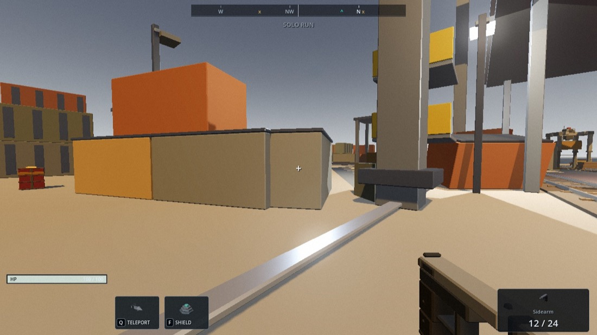
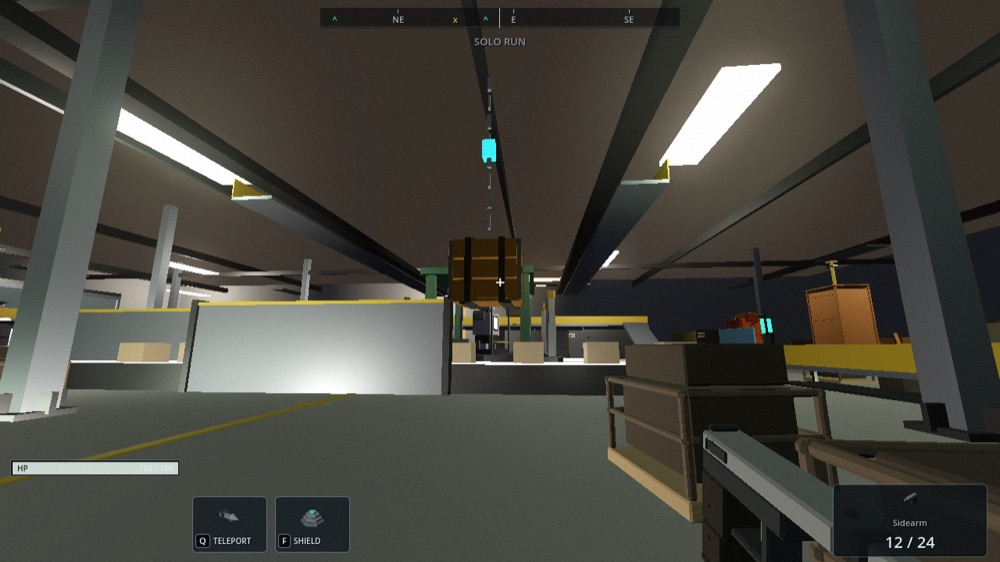
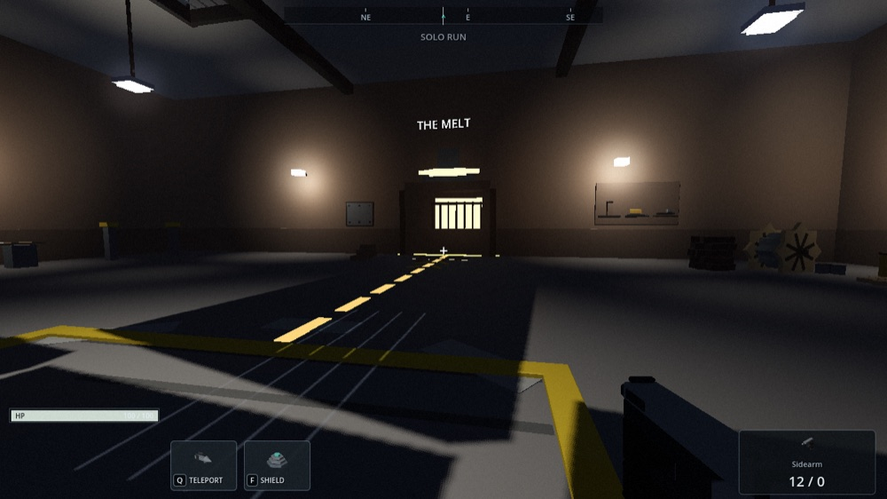

~/products / stackers 03 of 09
Stackers
LIVEFREELoot. Shoot. Reboot. An extraction shooter set in industrial yards the machines quietly run – crack open caches, outwit the residents, get out with everything you can carry. Die out there and the yard keeps your pack. Runs in a browser tab.



problem
Extraction shooters are the genre people talk about and rarely finish – because the good ones need a persistent world, a progression system, enemies with real behavior, and other players in the same space. Drop In proved the loop fits in a browser tab. Stackers asks the harder question: does the depth fit too?
built
- Three yards and a hub. The Works, a live factory with a basement where only your flashlight helps. The Railhead, a container port under a 24-meter gantry. The Melt, an open-cast smelter at night where descending is free and every way back up has to be earned. The Culvert ties them together.
- Cores, not classes. Six permanent abilities – teleport, scan, push, shield, foam, daze – bought in order on one circuit, upgraded with scrap, transformed at the top tier only with materials a yard's boss gives up. You bring two per run, and those two are your build.
- The machines are the fiction. Pickers scavenge, Wardens patrol and shoot, Whistles scream your position to everything nearby, Haulers ignore you until you make it personal. They telegraph, converge, and get reinforced – and more real players in the yard means more machines walking in through the gates.
- Shared world by default. Six Stackers per yard, all after the same pods, with proximity voice on a held key. Bring a duo and you get a through-wall marker wearing their handle and revives when they go down. Friendly fire stays on.
- Still just a link. Godot exported to WebAssembly, shipped on itch.io. Gamepad support is one button press. No launcher, no install, no account.
stack
- engine
- Godot 4 · exported to WebAssembly
- multiplayer
- shared yards, six players each · proximity voice · duo invites
- systems
- six-core progression circuit · boss-gated materials · persistent bank
- distribution
- itch.io, playable in the browser · gamepad supported
status
Live on itch.io – playable solo or with a partner, right now, from a link. The second game in this directory and the more ambitious one: Drop In was one park and one loop, Stackers is three maps, a hub, a progression tree, four enemy archetypes with bosses, and a shared world.